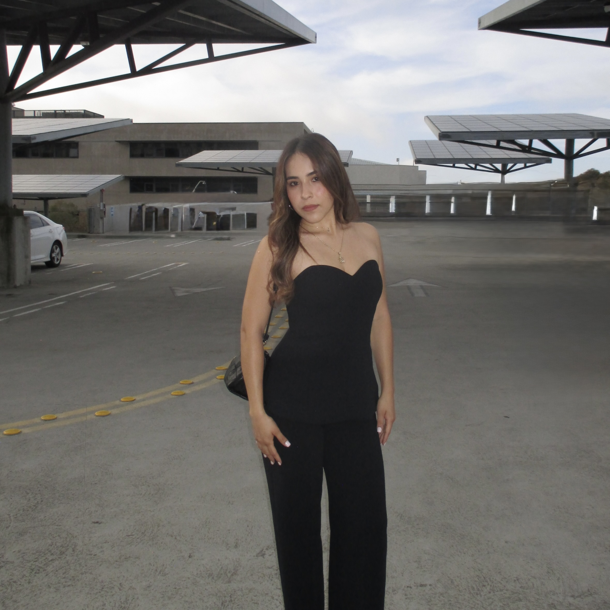

Giselle Mendoza
Computer Engineering student at UC San Diego.Through my coursework and projects, I've had the opportunity to explore many areas of engineering. Along the way, I've discovered that I'm most interested in embedded systems and software engineering. I'm especially passionate about the connection between hardware and software. I hope to pursue a career in those fields where I can contribute to innovation.
